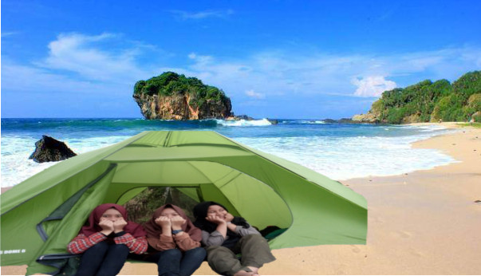
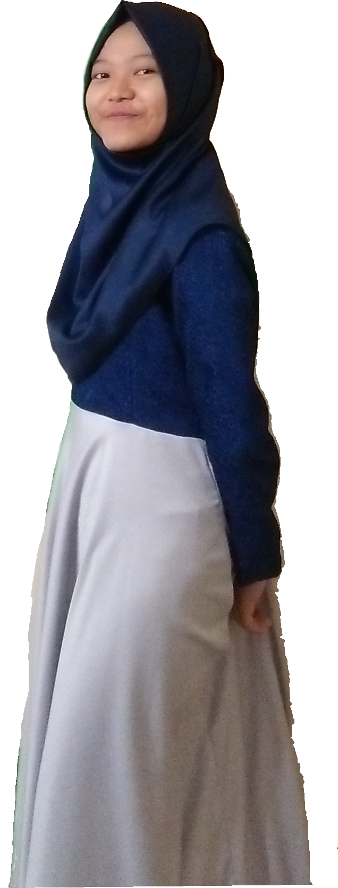

WELCOME TO MY WORLD!
Profil Sayu
Hello guys, welcome to my world. Let me intoduce myself first. Nama aku Sayu Ira Febriani. Biasa dipanggil Sayu. Kalian pasti nebak mata aku sayu karena nama aku Sayu. Fyi, itu bukan karena mata aku yang sayu, itu gak ada hubungannya sama sekali. Mata aku normal kayak kebanyakan orang. Nah, kalau yang ini pasti tebakan kalian benar, aku lahir pada bulan Februari. Tepatnya tanggal 16 Februari 2001. Aku lahir dan besar di Bogor, Kota Hujan. Aku adalah anak ke-2 dari 2 bersaudara alias anak bungsu. Aku memiliki seorang kakak perempuan.
  For more information, jika ada waktu luang aku suka food travelling, biasanya sih bareng kakakku. Kenapa? Karena bakal dibayarin he he he. Actually, aku gak punya spesifik makananan dan minuman favorit. Yang pasti itu, enak dan manis, kaya aku he he. Contohnya, ice cream, cake, martabak manis, dan macaroon. Sebenernya, aku belum pernah nyobain macaroon, aku gak tau rasanya tuh kayak apa. Tapi kalo liat fotonya di tumblr-tumblr gitu, keliatannya enak, hu hu. So, kalau kalian mau ngasih macaroon, aku ikhlas nerima kok, he he.
 Nah ini nih daftar hobi keduaku. Aneh ya? he he. Tapi kaya yang aku sebutin sebelumnya, aku ini emang seneng banget kalau naik kereta. Gak tau alasannya. Ya, emang sih bener kata orang, "Cinta gak butuh alasan" Ini yang aku rasain kalau naik kereta, seneng aja, gak tau alasannya apa. Pokoknya sebisa mungkin, kalau pergi ke luar kota, aku bakal gunain kereta api. So, kalau kalian mau naik kereta api, jangan lupa ajakin aku, he he.
Nah ini nih daftar hobi keduaku. Aneh ya? he he. Tapi kaya yang aku sebutin sebelumnya, aku ini emang seneng banget kalau naik kereta. Gak tau alasannya. Ya, emang sih bener kata orang, "Cinta gak butuh alasan" Ini yang aku rasain kalau naik kereta, seneng aja, gak tau alasannya apa. Pokoknya sebisa mungkin, kalau pergi ke luar kota, aku bakal gunain kereta api. So, kalau kalian mau naik kereta api, jangan lupa ajakin aku, he he.